Our Services
A range of natural, evidence-informed therapies to restore balance and wellbeing.
Choose a therapy tailored to your needs — gentle, safe, and client-centred.
OUR SERVICES
What to expect: a short intake, a personalized plan, and gentle progress checks. Most sessions last 45–60 minutes; some programs include follow-up virtual support.
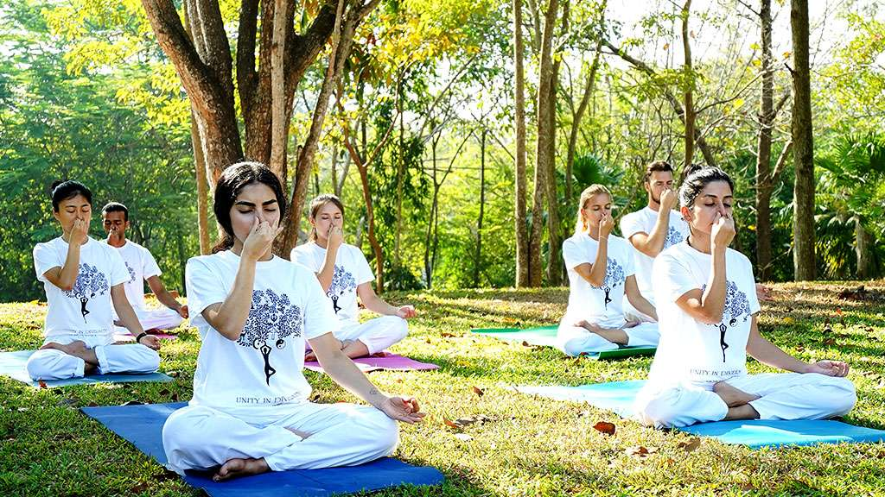
Pranayama & Breathwork
Breath is the foundation of life. Our guided pranayama and breathwork sessions help correct breathing patterns, improve lung capacity, reduce stress, calm the nervous system, and enhance overall vitality. Ideal for anxiety, fatigue, hormonal imbalance, and lifestyle-related issues.
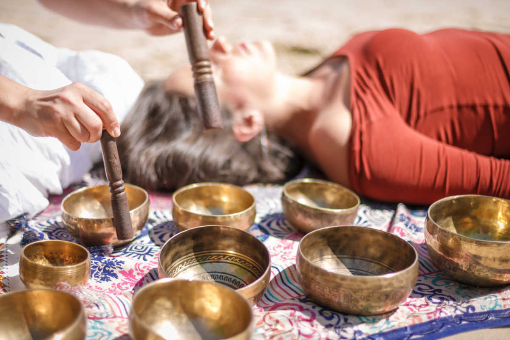
Sound Healing
A deeply relaxing therapy using sound vibrations to restore energetic balance. Sound healing helps release emotional blockages, reduce stress, improve sleep, and promote deep mental calm.
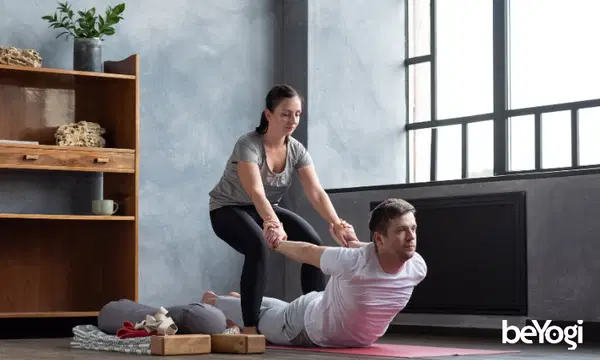
Therapeutic Yoga
Customized yoga practices designed to support healing from pain, stiffness, stress, and lifestyle disorders. Gentle, safe, and suitable for beginners and those with physical limitations.

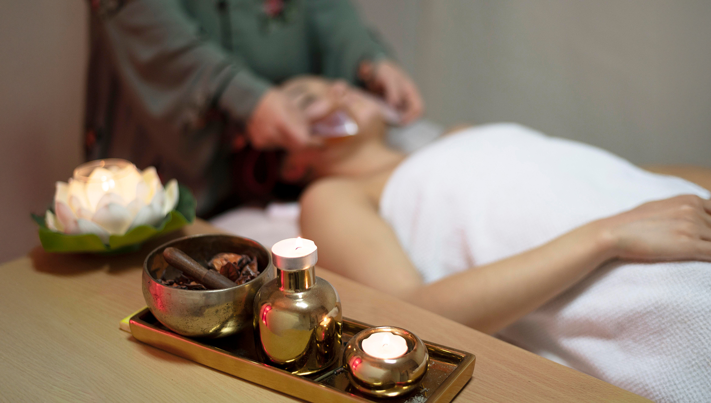
Natural Therapies
A natural approach that supports the body’s self-healing ability through diet guidance, lifestyle correction, detox methods, and natural therapies. Helps manage chronic conditions and improve overall health.
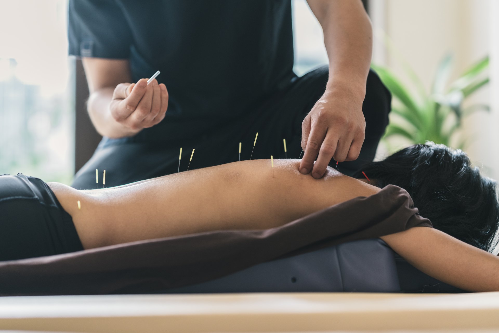
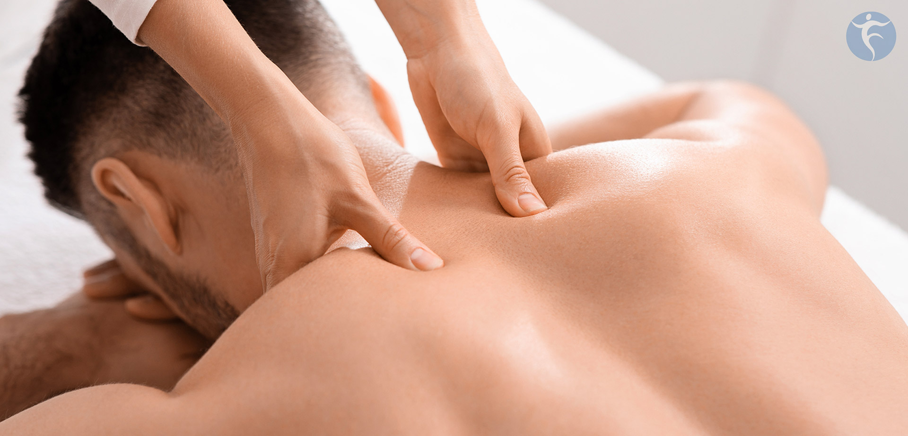
Acupuncture / Acupressure
A traditional therapy that stimulates specific points to balance energy flow, reduce pain, improve organ function, and support hormonal and metabolic health.
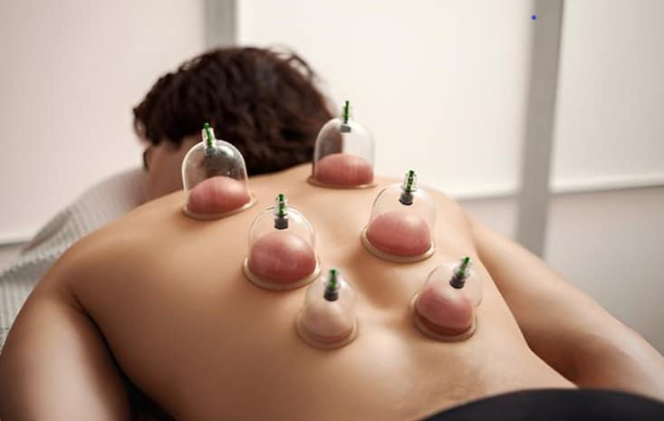
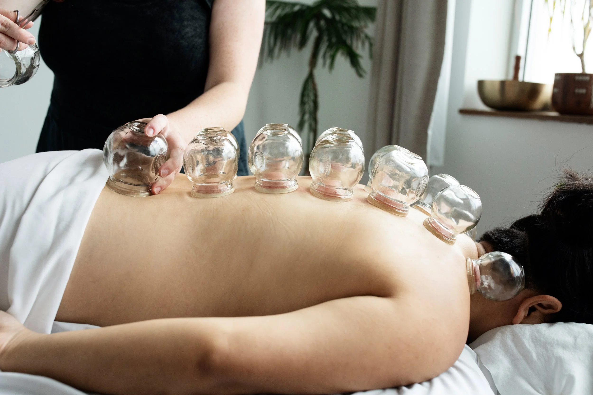
Cupping Therapy
A detoxifying therapy that improves blood circulation, relieves muscle tension, reduces inflammation, and helps with chronic pain, stress, and fatigue.
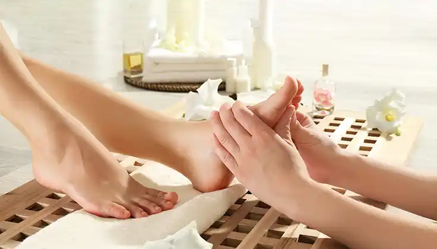
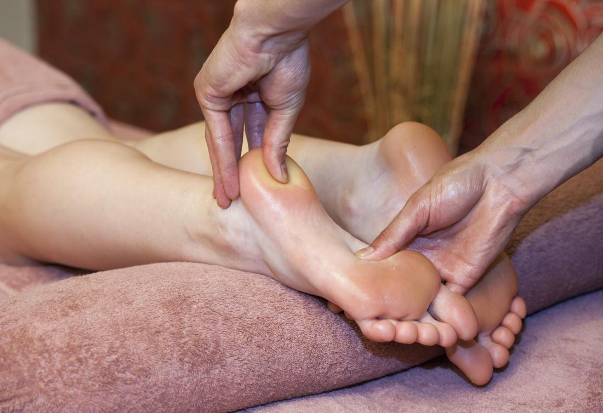
Foot Reflexology
A holistic therapy that works on reflex points in the feet corresponding to organs and systems in the body. Helps improve circulation, reduce stress, and promote deep relaxation.

Varma Therapy
An ancient Siddha-based therapy that activates vital energy points to relieve pain, improve mobility, and restore energy flow in the body.
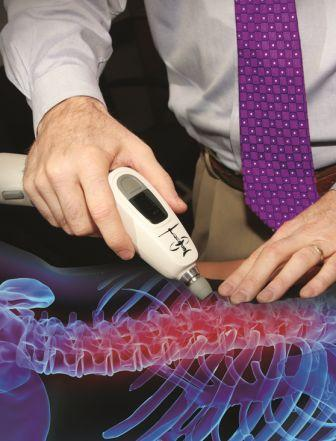
Chiropractic Method
A non-invasive technique focusing on spinal alignment and posture correction. Helps relieve back pain, neck pain, joint stiffness, and nerve-related discomfort.
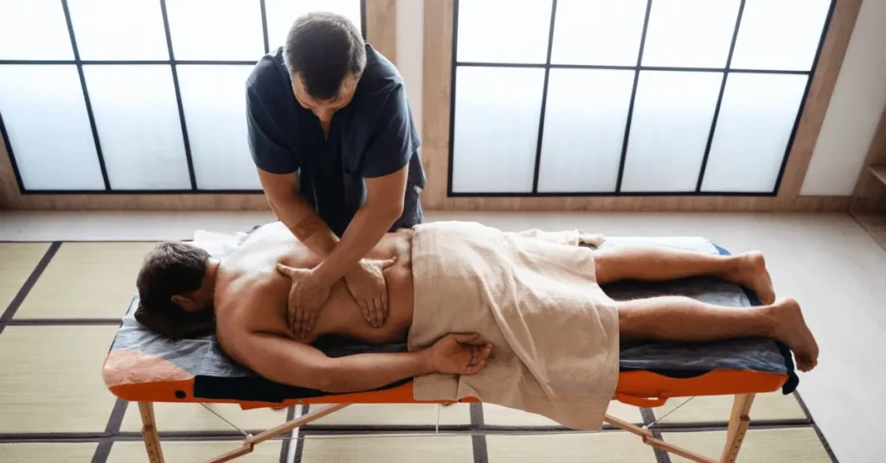
Dorn Therapy
A gentle manual therapy used to correct spinal and joint misalignments, especially effective for back pain, hip issues, and posture-related discomfort.
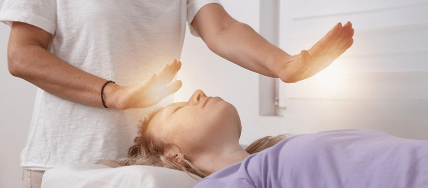
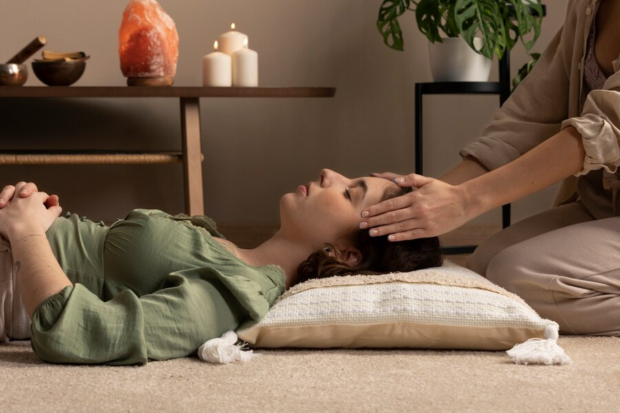
Pranic Healing & Complementary Therapies
Energy-based healing methods that cleanse and energize the body’s energy field, supporting emotional balance, mental clarity, and faster recovery.
FAQs
How long is a typical session?
Most sessions run 45–60 minutes; initial assessments may be 75 minutes.
Do you offer follow-up support?
Yes — we provide virtual follow-ups and tailored home programs.
Are services suitable for beginners?
Absolutely — therapies are adapted to each person’s needs and abilities.
Do you accept insurance?
Some services may be eligible for reimbursement; check with your provider.